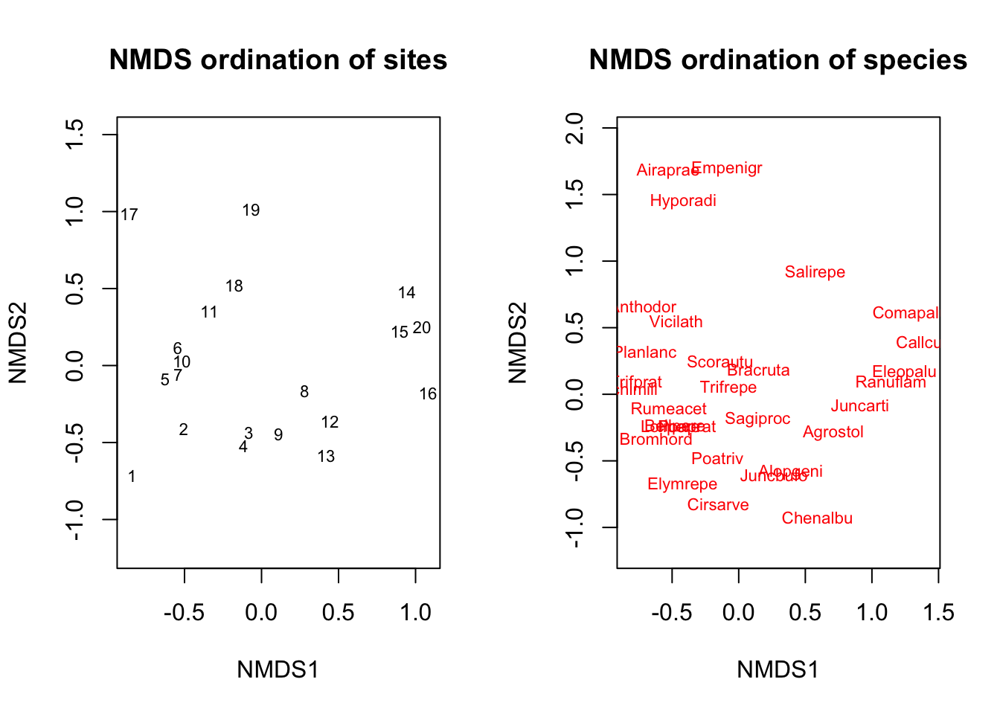
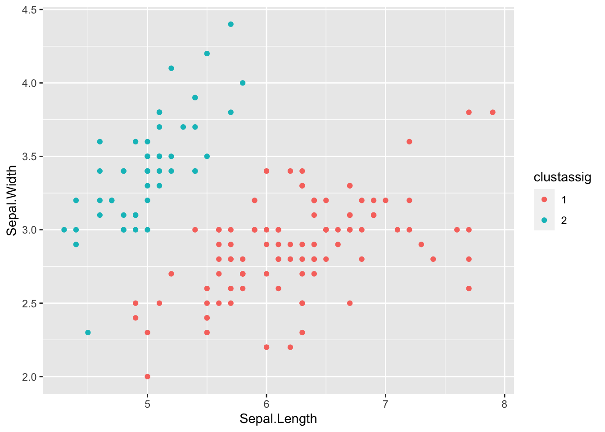

Chapter 16 REcoStats: Linear Models
We describe linear models in this chapter. First we need to load some libraries (and install them if necessary).
if (!require("tidyverse")) install.packages("tidyverse") # Library for data analysis
if (!require("stargazer")) install.packages("stargazer") # Library for producing pretty tables of estimates from linear models
if (!require("devtools")) install.packages("devtools")
if (!require("report")) devtools::install_github("easystats/report") # Library for producing nice verbose reports of linear models16.1 Fitting a simple linear regression
We’ll use a dataset published by Allison and Cicchetti (1976). In this study, the authors studied the relationship between sleep and various ecological and morphological variables across a set of mammalian species: https://science.sciencemag.org/content/194/4266/732
Let’s start by loading the data into a table:
allisontab <- read.csv("Data_allison.csv")This dataset contains several variables related to various body measurements and measures of sleep in different species. Note that some of these are continuous, while others are discrete and ordinal.
summary(allisontab)## Species BodyWt BrainWt NonDreaming
## Length:62 Min. : 0.005 Min. : 0.14 Min. : 2.100
## Class :character 1st Qu.: 0.600 1st Qu.: 4.25 1st Qu.: 6.250
## Mode :character Median : 3.342 Median : 17.25 Median : 8.350
## Mean : 198.790 Mean : 283.13 Mean : 8.673
## 3rd Qu.: 48.202 3rd Qu.: 166.00 3rd Qu.:11.000
## Max. :6654.000 Max. :5712.00 Max. :17.900
## NA's :14
## Dreaming TotalSleep LifeSpan Gestation
## Min. :0.000 Min. : 2.60 Min. : 2.000 Min. : 12.00
## 1st Qu.:0.900 1st Qu.: 8.05 1st Qu.: 6.625 1st Qu.: 35.75
## Median :1.800 Median :10.45 Median : 15.100 Median : 79.00
## Mean :1.972 Mean :10.53 Mean : 19.878 Mean :142.35
## 3rd Qu.:2.550 3rd Qu.:13.20 3rd Qu.: 27.750 3rd Qu.:207.50
## Max. :6.600 Max. :19.90 Max. :100.000 Max. :645.00
## NA's :12 NA's :4 NA's :4 NA's :4
## Predation Exposure Danger
## Min. :1.000 Min. :1.000 Min. :1.000
## 1st Qu.:2.000 1st Qu.:1.000 1st Qu.:1.000
## Median :3.000 Median :2.000 Median :2.000
## Mean :2.871 Mean :2.419 Mean :2.613
## 3rd Qu.:4.000 3rd Qu.:4.000 3rd Qu.:4.000
## Max. :5.000 Max. :5.000 Max. :5.000
## We’ll begin by focusing on the relationship between two of the continuous variables: body size (in kg) and total amount of sleep (in hours). Let’s plot these to see what they look like:
ggplot(allisontab) + geom_point(aes(x=BodyWt,y=TotalSleep))## Warning: Removed 4 rows containing missing values (geom_point).
Hmmm this looks weird. We have many measurements of body weight around 0 (small values) and a few very large values of thousands of kilograms. This is not surprising: given that this dataset spans several different species, the measurements spans several orders of magnitude (from elephants to molerats). To account for this, variables involving body measurements (like weight or length) are traditionally converted into a log-scale when fitted into a linear model. Let’s see what happens when we log-scale the body weight variable:
ggplot(allisontab) + geom_point(aes(x=log(BodyWt),y=TotalSleep))## Warning: Removed 4 rows containing missing values (geom_point).
A pattern appears to emerge now. There seems to be a negative correlation between the log of body weight and the amount of sleep a species has. Indeed, we can measure this correlation using the cor() function:
cor(log(allisontab$BodyWt), allisontab$TotalSleep, use="complete.obs")## [1] -0.5328345Let’s build a simple linear model to explain total sleep, as a function of body weight. In R, the standard way to fit a linear model is using the function lm(). We do so by following the following formula:
fit <- lm(formula, data)
The formula within an lm() function for a simple linear regression is:
\[\bf{y} \sim \bf{x_1}\] Where \(y\) is the response variable and \(x_1\) is the predictor variable. This formula is a shorthand way that R uses for writing the linear regression formula:
\[\bf{Y} = \beta_0 + \beta_1 \bf{x_1} + \bf{\epsilon}\]
In other words, R implicitly knows that each predictor variable will have an associated \(\beta\) coefficient that we’re trying to estimate. Note that here \(\bf{y}\), \(\bf{x_1}\), \(\bf{\epsilon}\), etc. represent lists (vectors) of variables. We don’t need to specify additional terms for the \(\beta_0\) (intercept) and \(\bf{\epsilon}\) (error) terms. The lm() function automatically accounts for the fact that a regression should have an intercept, and that there will necessarily exist errors (residuals) between our fit and the the observed value of \(\bf{Y}\).
We can also write this exact same equation by focusing on a single (example) variable, say \(y_i\):
\[y_i = \beta_0 + \beta_1 x_{1,i} + \epsilon_i\] In general, when we talk about vectors of variables, we’ll use boldface, unlike when referring to a single variable.
In our case, we’ll attempt to fit total sleep as a function of the log of body weight, plus some noise:
myfirstmodel <- lm(TotalSleep ~ log(BodyWt), data=allisontab)
myfirstmodel##
## Call:
## lm(formula = TotalSleep ~ log(BodyWt), data = allisontab)
##
## Coefficients:
## (Intercept) log(BodyWt)
## 11.4377 -0.7931This way, we are fitting the following model:
\[\bf{TotalSleep} = \beta_0 + \beta_1 \bf{log(BodyWt)} + \bf{\epsilon}\]
Remember that the \(\beta_0\) coefficient is implicitly assumed by the lm() function. We can be more explicit and incorporate it into our equation, by simply adding a value of 1 (a constant). This will result in exactly the same output as before:
myfirstmodel <- lm(TotalSleep ~ 1 + log(BodyWt), data=allisontab)
myfirstmodel##
## Call:
## lm(formula = TotalSleep ~ 1 + log(BodyWt), data = allisontab)
##
## Coefficients:
## (Intercept) log(BodyWt)
## 11.4377 -0.7931Exercise: the function attributes() allows us to unpack all the components of the object outputted by the function lm() (and many other objects in R). Try inputting your model output into this function. We can observe that one of the attributes of the object is called coefficients. If we type myfirstmodel$coefficients, we obtain a vector with the value of our two fitted coefficients (\(\beta_0\) and \(\beta_1\)). Using the values from this vector, try plotting the line of best fit on top of the data. Hint: use the geom_abline() function from the ggplot2 library.
16.2 Interpreting a simple linear regression
We can obtain information about our model’s fit using the function summary():
summary(myfirstmodel)##
## Call:
## lm(formula = TotalSleep ~ 1 + log(BodyWt), data = allisontab)
##
## Residuals:
## Min 1Q Median 3Q Max
## -6.6990 -2.6264 -0.2441 2.1700 9.9095
##
## Coefficients:
## Estimate Std. Error t value Pr(>|t|)
## (Intercept) 11.4377 0.5510 20.759 < 2e-16 ***
## log(BodyWt) -0.7931 0.1683 -4.712 1.66e-05 ***
## ---
## Signif. codes: 0 '***' 0.001 '**' 0.01 '*' 0.05 '.' 0.1 ' ' 1
##
## Residual standard error: 3.933 on 56 degrees of freedom
## (4 observations deleted due to missingness)
## Multiple R-squared: 0.2839, Adjusted R-squared: 0.2711
## F-statistic: 22.2 on 1 and 56 DF, p-value: 1.664e-05The summary() function provides a summary of the output of lm() after it’s been given some data and a model to fit. Let’s pause and analyze the output here. The first line just re-states the formula we have provided to fit our model. Below that, we get a summary (min, max, median, etc.) of all the residuals (error terms) between our linear fit and the observed values of \(\bf{TotalSleep}\).
Below that, we can see a table with point estimates, standard errors, and a few other properties of our estimated coefficients: the intercept (\(\beta_0\), first line) and the slope (\(\beta_1\), second line). The standard error is a measure of how confident we are about our point estimate (we’ll revisit this in later lectures). The “t value” corresponds to the statistic for a “t-test” which serves to determine whether the estimate can be considered as significantly different from zero. The last column is the P-value from this test. We can see that both estimates are quite significantly different from zero (P < 0.001), meaning we can reject the hypothesis that these estimates are equivalent to zero.
Finally, the last few lines are overall measures of the fit of the model. ‘Multiple R-squared’ is the fraction of the variance in \(\bf{TotalSleep}\) explained by the fitted model. Generally, we want this number to be high, but it is possible to have very complex models with very high R-squared but lots of parameters, and therefore we run the risk of “over-fitting” our data. ‘Adjusted R-squared’ is a modified version of R-squared that attempts to penalize very complex models. The ‘residual standard error’ is the sum of the squares of the residuals (errors) over all observed data points, scaled by the degrees of freedom of the linear model, which is equal to n – k – 1 where n = total observations and k = total model parameters. Finally, the F-statistic is a test for whether any of the explanatory variables included in the model have a relationship to the outcome. In this case, we only have a single explanatory variable (\(\bf{log(BodyWt)}\)), and so the P-value of this test is simply equal to the P-value of the t-test for the slope of \(\bf{log(BodyWt)}\).
We can use the function report() from the library easystats (https://github.com/easystats/report) to get a more verbose report than the summary() function provides.
report(myfirstmodel)## Formula contains log- or sqrt-terms. See help("standardize") for how such terms are standardized.
## Formula contains log- or sqrt-terms. See help("standardize") for how such terms are standardized.## We fitted a linear model (estimated using OLS) to predict TotalSleep with BodyWt (formula: TotalSleep ~ 1 + log(BodyWt)). The model explains a significant and substantial proportion of variance (R2 = 0.28, F(1, 56) = 22.20, p < .001, adj. R2 = 0.27). The model's intercept, corresponding to BodyWt = 0, is at 11.44 (95% CI [10.33, 12.54], t(56) = 20.76, p < .001). Within this model:
##
## - The effect of BodyWt [log] is significantly negative (beta = -0.79, 95% CI [-1.13, -0.46], t(56) = -4.71, p < .001; Std. beta = -1.16, 95% CI [-1.91, -0.41])
##
## Standardized parameters were obtained by fitting the model on a standardized version of the dataset.Note that this function “standardizes” the input variables before providing a summary of the output, which makes the estimates’ value to be slightly different than those stored in the output of lm(). This makes interpretation of the coefficients easier, as they are now expressed in terms of standard deviations from the mean.
Another way to summarize our output is via a summary table in , which can be easily constructed using the function stargazer() from the library stargazer (https://cran.r-project.org/web/packages/stargazer/index.html).
stargazer(myfirstmodel, type="text")##
## ===============================================
## Dependent variable:
## ---------------------------
## TotalSleep
## -----------------------------------------------
## log(BodyWt) -0.793***
## (0.168)
##
## Constant 11.438***
## (0.551)
##
## -----------------------------------------------
## Observations 58
## R2 0.284
## Adjusted R2 0.271
## Residual Std. Error 3.933 (df = 56)
## F Statistic 22.203*** (df = 1; 56)
## ===============================================
## Note: *p<0.1; **p<0.05; ***p<0.01This package also supports LaTeX and HTML/CSS format (see the type option in ?stargazer), which makes it very handy when copying the output of a regression from R into a working document.
Exercise: try fitting a linear model for \(\bf{TotalSleep}\) as a function of brain weight (\(\bf{BrainWt}\)). Keep in mind that this is a size measurement that might span multiple orders of magnitude, just like body weight. What are the estimated slope and intercept coefficients? Which coefficients are significantly different from zero? What is the proportion of explained variance? How does this compare to our previous model including \(\bf{BodyWt}\)?
Exercise: Plot the linear regression line of the above exercise on top of your data.
16.3 Hypothesis testing and permutation testing
Let’s evaluate again the hypothesis that there is no relationship between TotalSleep and log(BodyWt). Recall that one way to do it would be by using a linear model, and testing whether the value of the fitted slope is significantly different from zero, using a t-test:
summary(lm(TotalSleep ~ log(BodyWt), data=allisontab))##
## Call:
## lm(formula = TotalSleep ~ log(BodyWt), data = allisontab)
##
## Residuals:
## Min 1Q Median 3Q Max
## -6.6990 -2.6264 -0.2441 2.1700 9.9095
##
## Coefficients:
## Estimate Std. Error t value Pr(>|t|)
## (Intercept) 11.4377 0.5510 20.759 < 2e-16 ***
## log(BodyWt) -0.7931 0.1683 -4.712 1.66e-05 ***
## ---
## Signif. codes: 0 '***' 0.001 '**' 0.01 '*' 0.05 '.' 0.1 ' ' 1
##
## Residual standard error: 3.933 on 56 degrees of freedom
## (4 observations deleted due to missingness)
## Multiple R-squared: 0.2839, Adjusted R-squared: 0.2711
## F-statistic: 22.2 on 1 and 56 DF, p-value: 1.664e-05Take a look at the P-values for the intercept and the slope. If you look at the help page ?summary.lm, you can see that the P-values from these values come from a two-sided t-test. t-tests are usually deployed to compare the means of two populations, or to assess whether the mean of a population has a value specified by a hypothesis. In the case of the slope, for example, we’re assessing whether our parameter estimate for the slope has a value specified by the null hypothesis, which in our case is zero. In other words, we’re testing whether the value of the slope is consistent with there being no relationship between the two variables (such that if we had an infinite number of data points, their estimated slope would be zero)
The above t-test makes assumptions on our data that sometimes may not be warranted. Most importantly, the t-test assumes we have a large number of samples, which might not always be the case. We can perform a more robust test that makes less a priori assumptions on our data - a permutation test. To do so, we need to be careful to permute the appropriate variables relevant to the relationship we are trying to test. In this case, we only have two variables ( TotalSleep and log(BodyWt) ), and we are trying to test whether there is a significant relationship between them. If we randomly shuffle one variable with respect to the other, we should obtain a randomized sample of our data. We can use the following function, which takes in a tibble and a variable of interest, and returns a new tibble in which that particular variable’s values are randomly shuffled.
permute <- function(tab,vartoshuffle){
# Extract column we wish to shuffle as a vector
toshuffle <- unlist(tab[,vartoshuffle],use.names=FALSE)
# The function sample() serves to randomize the order of elements in a vector
shuffled <- sample(toshuffle)
# Replace vector in new table (use !! to refer to a dynamic variable name)
newtab <- mutate(tab, !!vartoshuffle := shuffled )
return(newtab)
}Now we can obtain a permuted version of our original data, and compute the slope estimate on this dataset instead:
permuted <- permute(allisontab, "TotalSleep")
plot(permuted$TotalSleep,log(permuted$BodyWt))permest <- lm(TotalSleep ~ log(BodyWt), data=permuted)$coeff[2]
permest## log(BodyWt)
## -0.7931139Exercise: try estimating the same parameter from a series of 100 permuted versions of our original data, and collecting each of the permuted parameters into a vector called “permvec.”
We now have a distribution of the parameter estimate under the assumption that there is no relationship between these two variables:
Exercise: obtain an empirical one-tailed P-value from this distribution by counting how many of the permuted samples are as extreme or more extreme (in the negative or positive direction, than our original estimate, and dividing by the total number of permuted samples we have. Note: you should add a 1 to both the denominator and the numerator of this ratio, in case there are no permuted samples that are as large as the original estimate, so as not to get an infinite number.
The R package coin provides a handy way to apply permutation tests to a wide variety of problems.
if (!require("coin")) install.packages("coin")## Loading required package: coin## Loading required package: survival##
## Attaching package: 'survival'## The following object is masked from 'package:boot':
##
## aml##
## Attaching package: 'coin'## The following object is masked from 'package:infer':
##
## chisq_test## The following object is masked from 'package:scales':
##
## pvaluelibrary("coin") # Library with pre-written permutation testsThe spearman_test() function runs a permutation test of independence between two numeric variables, like the one in the permute() function we coded above. The advantage is that we don’t need to actually code the function, we can just run the pre-made function in the coin package directly, as long as we know what type of dependency we’re testing. In this case, we perform a test using 1000 permutations (the more permutations, the more exact the test):
spearman_test(TotalSleep ~ log(BodyWt), data=allisontab, distribution=approximate(nresample=1000)) ##
## Approximative Spearman Correlation Test
##
## data: TotalSleep by log(BodyWt)
## Z = -3.8188, p-value < 0.001
## alternative hypothesis: true rho is not equal to 0Exercise: Perform a permutation test to assess whether there is a significant relationship between log(BrainWt) and TotalSleep. Compare this to a t-test testing the same relationship.
Let’s perform a different type of permutation test. In this case, we’ll test whether the mean scores of two categories (for example, the math exam scores from two classrooms) are equal to each other.
mathscore <- c(80, 114, 90, 110, 116, 114, 128, 110, 124, 130)
classroom <- factor(c(rep("X",5), rep("Y",5)))
scoretab <- data.frame(classroom, mathscore)The standard way to test this is using a t-test, which assumes we have many observations from the two classrooms (do we?) and that these observations come from distributions that have the same variance:
t.test(mathscore~classroom, data=scoretab, var.equal=TRUE)##
## Two Sample t-test
##
## data: mathscore by classroom
## t = -2.345, df = 8, p-value = 0.04705
## alternative hypothesis: true difference in means is not equal to 0
## 95 percent confidence interval:
## -38.081091 -0.318909
## sample estimates:
## mean in group X mean in group Y
## 102.0 121.2Exercise: look at the help menu for the oneway_test in the coin package and find a way to carry out the same type of statistical test as above, but using a permutation procedure. Apply it to the scoretab data defined above. Do you see any difference between the P-values from the t-test and the permutation-based test. Why?